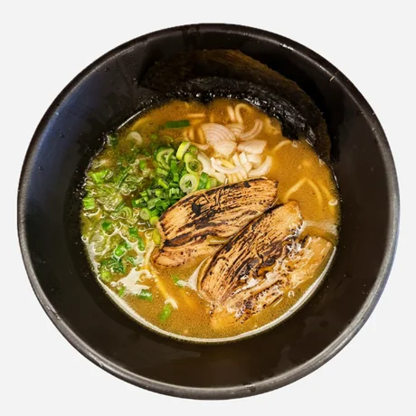
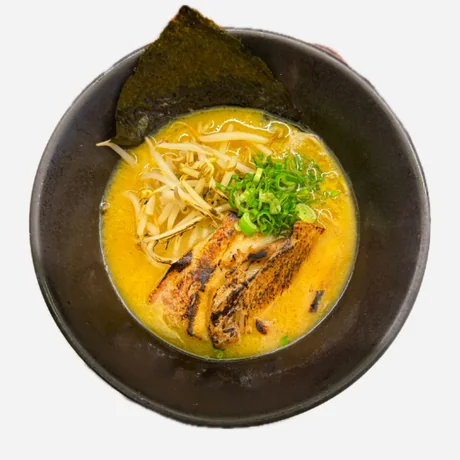
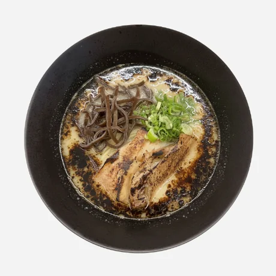
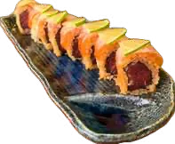
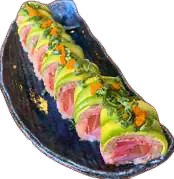

Simple auténtico ramen
Creados para quienes vienen seguido: caldo y fideos de la misma calidad, con menos toppings y mejor precio. Ramen auténtico cualquier día de la semana.

Shoyu clásico
$170
Caldo de soya equilibrado de 360 ml, panceta de cerdo, cebolla y alga nori.

Miso clásico
$170
Caldo de miso caliente de 360 ml, panceta, cebollín y germen de soya.

Tonkotsu
$180
Caldo cremoso y profundo de 360 ml, panceta, hongo y cebollín.
Y también sushi
Más de 25 rolls de la casa, desde $128 hasta $227.


Cócteles con sake
- Sakelichi$109
- Matchasake$109
- Sakemaracuya$109
- Ichigosake$109
- Sakenick$109
- Jingersake$109
- Calpisake$109
Cerveza
- Kabuki, Karyu y Okami (355 ml)$113
- Asahi (330 ml)$106
- Sapporo Premium (355 ml)$136
Refrescos
- Calpis, refresco, té verde$44
- Limonada de piña, fresa o lichi$71 / $75
Selección especial de sake que cambia constantemente. Pregunta por las recomendaciones.
Tu opinión nos importa
Cuéntanos cómo te fue para seguir mejorando. Si necesitas factura, también puedes pedirla aquí.
Un millón de arigatou
Gracias por venir.
Ven a comer, o pide a casa
Estamos en la Colonia Americana. También llegamos a tu casa por Uber Eats.
- Dirección
- C. José María Morelos 1573D, Col. Americana, 44160 Guadalajara, Jal.
- Horario
- Martes a domingo, de 1:00 a 8:00 pm. Lunes cerrado.
- @ebisumaru_ramen